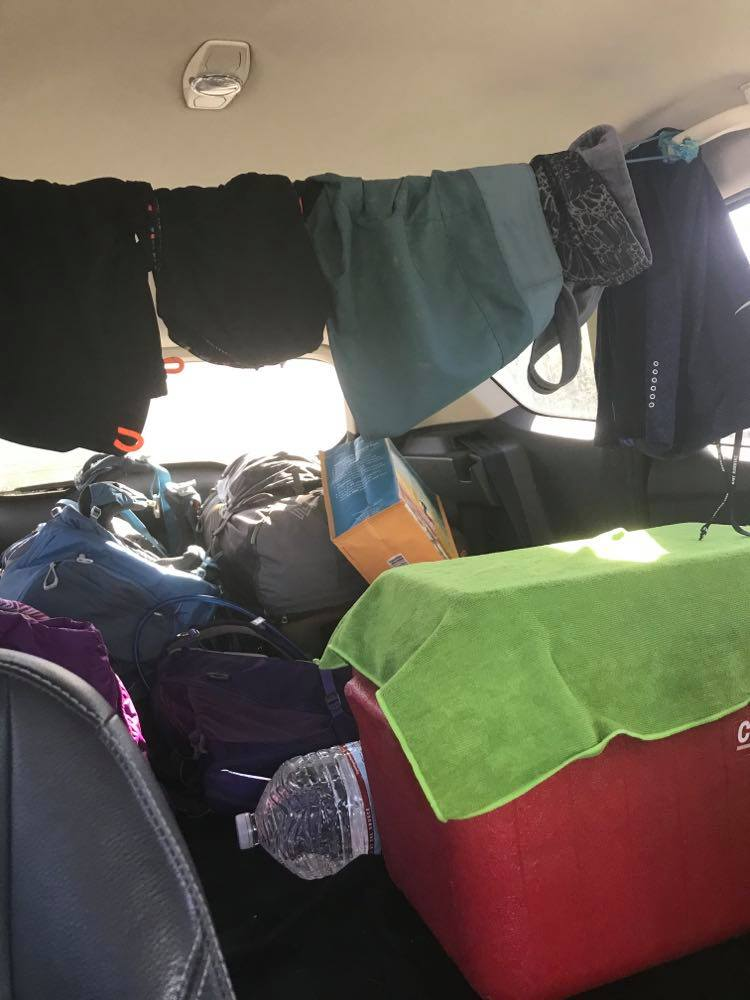
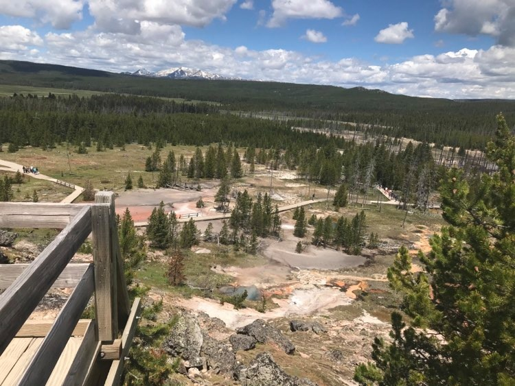
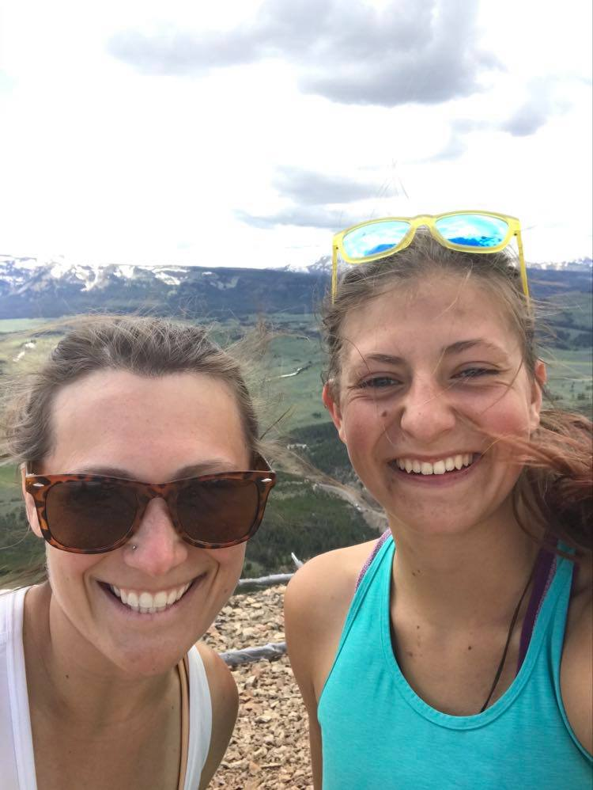

My Blog
So at last I know that this will get read tomorrow and that gives me hope fo the future and also that I will make it out alive.
Our day began in the cabin and I really drug my feet but we did end up leaving earlier than yesterday so maybe I'm better at moving quickly than I was 24 hours ago. Because I'd shown Alana everything tha I'd known to go look at in the park I the fantastic tour guide I am told her to just look at whatever seems interesting. Our first stop we left the car running. Have we become lazy maybe but it was a 10 feet walk to go look at Lewis Falls which we'd been driving by for a few days now. We then got back in our car and got off at the Kepler Cascades overlook which is the same sort of idea. There are hundreds of these spots and as soon as the day gets going these places are all full but honestly how many waterfalls can you tully appreciate in a day. After admiring Kepler Cascades and applying sunscreen we hiked 2.5 miles out to Lone Star Geyser which is such a far walk because the long arm off the law needs room to spread out. The trail guide said it was heavily trafficked but on our way out we only saw 2 bikers. The hike itself was bautiful and along a river. It was also a paved trail which was a new experience and I think we covered the ground in about 40 minutes. The Geyser was impressive and supposedly errupts every 2-3 hours so of course we saw nothing.The people who had biked out there seemed determined to wait as long as it took but we didn't necessarily have the patience to sit for 2-3 hours. It probably errupted right after we left.
We then drove past all the popular sights and through a construction zones where the workers as per usual were on their phones. I think it should be mentioned that the back of our car now looks like a hobo town especially cause we've got a close line hung up and our stuff is in varying states of disaster. Driving past the sights we kind of realized how lucky we'd been earlier in the week because the parking lots were jam packed and the trails looked more like grocery store lines pre-Corona social distancing. I think we were both glad we avoided this and continued on our merry way to Madison where we were going to have a picnic. We had a picnic in the ampetheater not in the actual picnic grounds because the view was better. Our picnic was fairly early but for once we avoided becoming hangry. Unfortunately I have realized that I can only do peanut butter and jelly so many times before it tastes the same. Looking at the Jelly container I have also realized the scary amount of Jelly I have consumed especially when the next three ingrediants after strawberries are high fructose corn syrup, corn syrup, and sugar. Thankfully Alana seems bent on pushing us as far as possible every day so the fact that I'm consuming straight sugar every day at lunch is okay. After we finished our picnic we walked along the river to the Tree Of Life. For those of you who don't know the story it involves a heard of buffalo, nearly dying, and hiding under some roots. As a result every time my family goes back we stop in. I think the tree has shrunk though because I definitely don't thing 3 of us could fit in the roots.
When we finally extracted ourselves from the side of the river-it was sunny and warm and the river was beautiful. Our next stop along the way after driving past several cascades and waterfalls that we didn't stop at was Artists paint pots. I really wasn't sure if we could make this hike considering it was a mile in total. The crowds weren't too bad and the paint pots were really pretty. As we climbed the hill to the overlook there was a dad and daughter hopping down the stairs like bunnies and it was cute. It also would have broken both of our knees had we attempted something like that. There were mud pots at the top that weirdly enough had the consistency of paint (who would have thought?). At the overlook we ran into a group of teenagers who were attempting to get the perfect picture in their matching purple shirts. Who's like when we go to Yellowstone lets all buy the same shirt! Okay maybe that is a thing but still weird. The teenagers were like the Texans in that they kept shuffling around and asking their friend to change the angle. They were like, "We aren't usually this high maintence so its okay!" I can't remember the last time I was high maintence maybe thats why I am wandering around in the woods for a week eating out of a bag and they all have matching t-shirts. Anyways Claire's getting a little salty. We continued on the one mile loop and ran into some old guy with a cane who was all like. "I'll try and be careful and not push you off" and so I giggled as one does. Then he said, "Unless you giggle then I'll push you off." I'm not sure if he was joking but I'm really not certain it was worth the risk. I hiked fairly fast past him
After artist paint pots we cruised along until we came to Bunsen Mountain. And because we already hiked 5 miles that day we turned around. Just kidding we yeeted ourselves up the mountains in shorts and tank tops with only our phones, one water bottle, and some bear spray. 2.1 miles and 1300 feet of elevation gain has never gone by so fast. The view was absolutely breath taking all the way up the hill. I kept getting encouraged to hike faster by the fact of the people who were coming down the hill. A dad carrying his child, an old guy with a cane, a four-year old and his mother. I figured if they can do it I could do it faster. This would become a problem later. About 3/4 of the way up the hill I got cell service. Really good cell service and called my mom to let her know I wasn't dead. I'm sorry blog readers had I been really dedicated I would have hauled my computer back up the mountain but I wasn't. The view from the top was breath taking. We could see a lot of mountains including the beartooths and Mammoth hot springs, and really pretty rocks, and well you get the point. However, it was pretty chilly at the top of the mountain and dressed the way we were we came down pretty fast. We ran into a guy from Arizona halfway down who was stuffing sticks into his backpack. For what purpose I don't know. He asked us whether we thought it was worth it to go to Mammoth because he was trying to avoid the crowds. Really? You come to Yellowstone from Arizona and are hesistant about seeing things because you might also see a lot of people? When we got to our car after a shockingly fast mountain climb adn sat in our car like dead people before driving to mammoth
Along the way we saw a bunch of people who were stopped looking at something so of course we slowed way down. Best we could figure it was an eagle eyerie, but because eagles really aren't all that uncommon where we are from we we didn't stop. Mammoth was an experience mainly because we were so exhausted that I don't think we absorbed any of it. We are going to head back in the morning for a second attempt.We then left the park accidentally driving under the Roosevelt Arch in the process and headed to go looking for a campground.
The first and most convenient we came to along the dirt road was closed, the next was 6ish miles up a questionable dirt road. As we continued up further and further into the middle of nowhere. I'll admit I felt a little nervous. The next campground was open dispersed camping and the road down to the sites was so muddy that it wasn't worth it. We then went to the furthest possible campground. Bear Creek and parked our car there. We then sat in the car for 2 hours stairing into space. At one point some park service people came by and asked if we were okay or broken down. "No no" we said, "Were fine." Which may have been an overstatement considering we'd been sitting in a car for two hours and laughing at eachother every time we looked at eachother. Exhausted-maybe. During the time that we sat in the car we saw a surprising number of people drive by. I guess people in Montana have nothing better to do on a friday evening than to go look at backcountry campgrounds. Maybe I should try that some evening. The creepiest car to come by was a creeper van with two old men in it and a ladder on top. This all made us feel very safe especially when we also camped at bear creek and there had been several warning signs for grizzly. We decided to sleep in the car. Eventually I left the car to go use the pit toilet but as I rounded the corner there was a lady just sitting using the toilet with door wide open. She was mortified I just turned around and left. We've all been there its best to not make a big deal out of it. Maybe its her thing to go use pit toilets in the middle of nowhere and just to stick it to the man to not shut the door.
We did a litle bit of walking along bear creek which the area actually looks like it'd be fantastic for hiking before crawling into the back of the car where we wouldn't move from for the rest of the evening. We cooked inside with the back door open. We ate inside. We literally did not brush our teeth because we didn't want to move. Lazy maybe. I didn't even blow up my pillow or mattress pad and instead just climbed in my sleeping bag and used my backpack for a pillow. Anyways, not sure how sleeping is going to go tonight as I keep thinking about how we are in the middle of nowhere backcountry Montana and no one knows where we are. If this blog never gets posted no one ever will. Although on the bright side if it does than we will have survived the night and made it back to civilization.
Please speak a touching eulogy at Alana and I's funeral
-Claire